Репортаж о выставке «Эрик Булатов. Избранные страницы» в историческом особняке РОСИЗО в Петроверигском переулке. Посещение: 17 мая 2026 года.
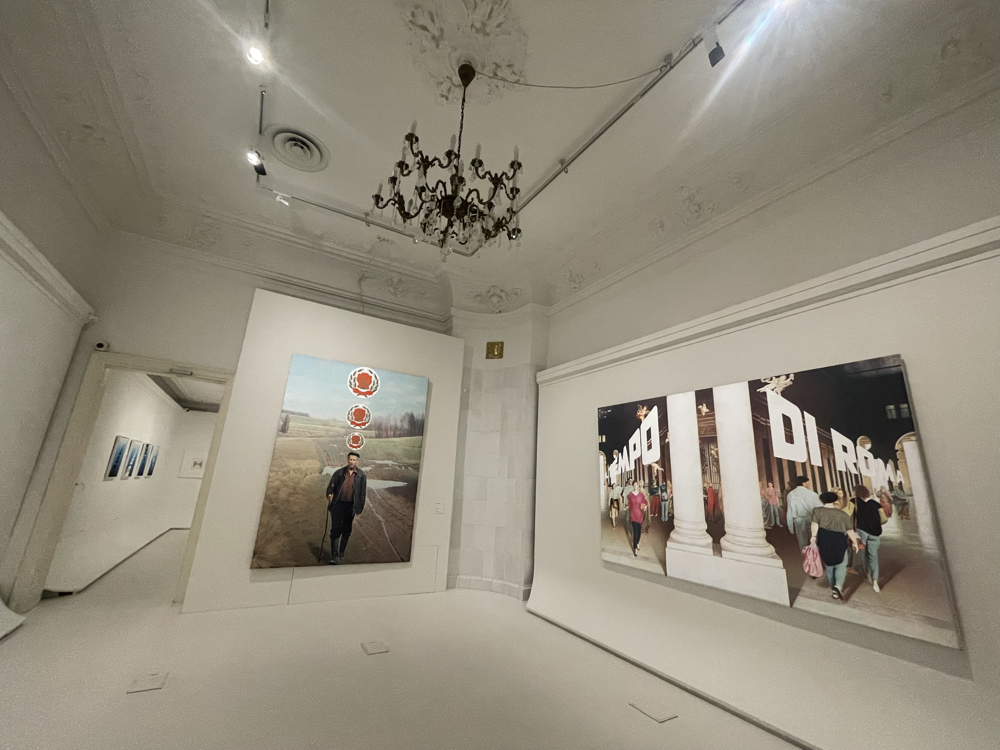
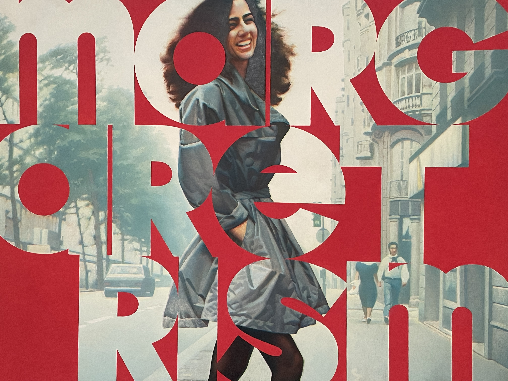
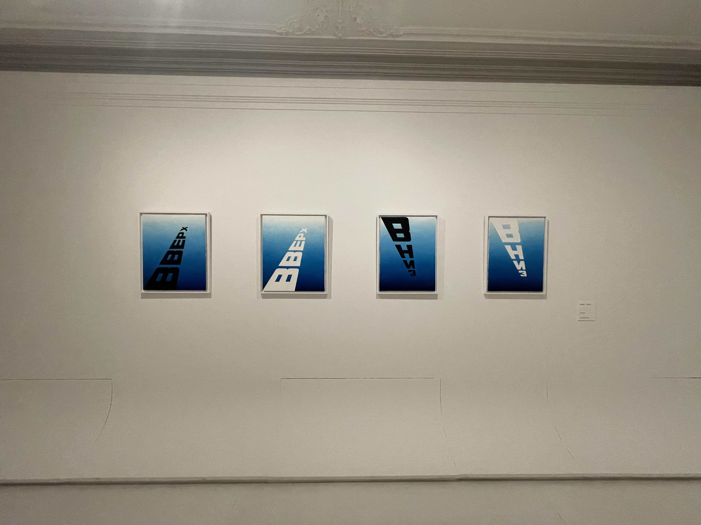
Введение
Каждый раз, сталкиваясь с монументальным искусством, мы ожидаем, что оно подавит нас своим масштабом. Но когда я переступил порог исторического особняка РОСИЗО в Петроверигском переулке, где открылась первая посмертная выставка Эрика Булатова «Избранные страницы», меня накрыло совершенно иное чувство.
Это был не груз монументальности, а оптический и смысловой шок. Главный вопрос, который пульсировал в моей голове, пока я переходил от холста к холсту: как плоское, агрессивное, рубленое слово способно разорвать трёхмерное пространство картины — или, наоборот, взять его в жёсткие тиски?
Как плоское слово берёт в тиски трёхмерное пространство?
Булатов, ушедший из жизни в ноябре 2025 года в Париже в возрасте 92 лет, оставил нам сложнейшую визуальную вселенную. Этот камерный, но невероятно ёмкий проект-дайджест — не просто набор картин, а ключи к дешифровке его философии.
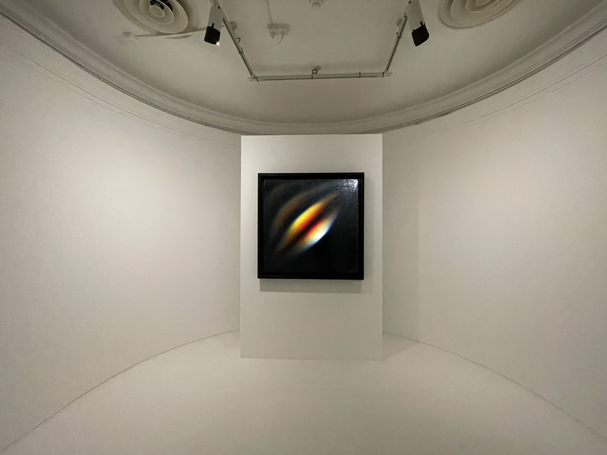
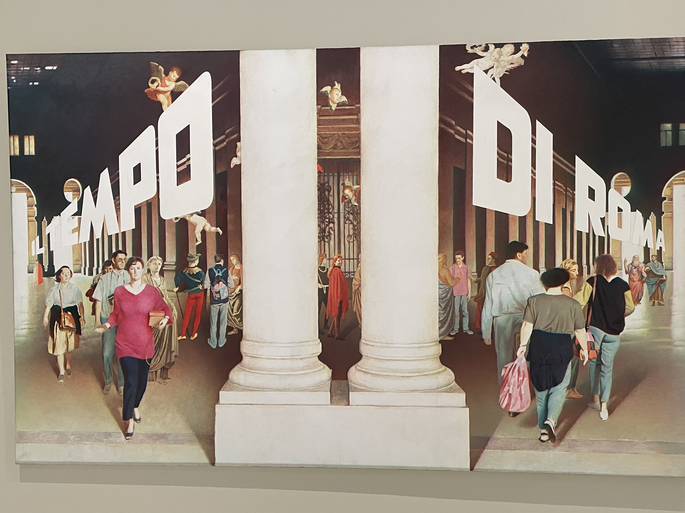
Двойная оптика
Чтобы понять природу булатовского парадокса, нужно посмотреть на контекст его формирования. Выпускник Суриковского института, Булатов долгие годы вёл двойную творческую жизнь. Полгода, в холодный сезон, он работал над оформлением детских книг вместе со своим неизменным соавтором и другом Олегом Васильевым.
На выставке этот период проиллюстрирован с пронзительной честностью: детские иллюстрации к «Золушке», «Коту в сапогах» и «Коньку-горбунку» помещены в так называемый «чёрный зал». Булатов, унаследовавший от своего учителя Владимира Фаворского принцип «белый — добро, а чёрный — зло», воспринимал эту поденщину как компромисс с советской реальностью.
В академической среде Булатова часто относят к соц-арту, указывая на его работу с узнаваемыми символами и шрифтами. Однако сам он категорически отвергал этот ярлык, подчёркивая, что соц-арт строится на иронии, которой в его работах нет. Его интересовал экзистенциальный выход за пределы социального пространства — полное освобождение.
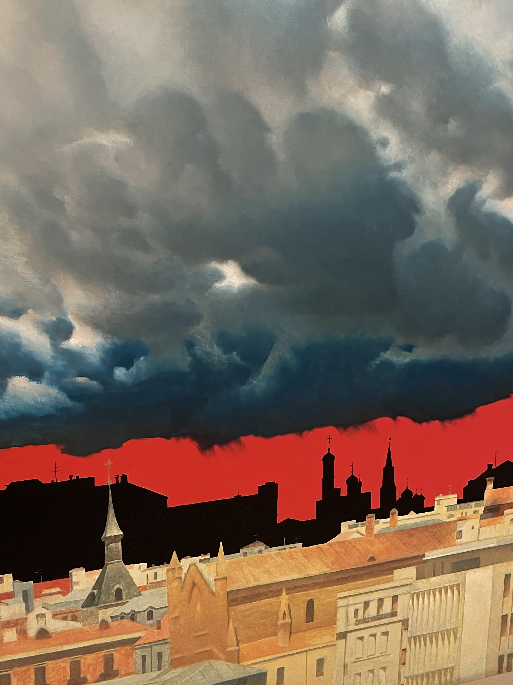
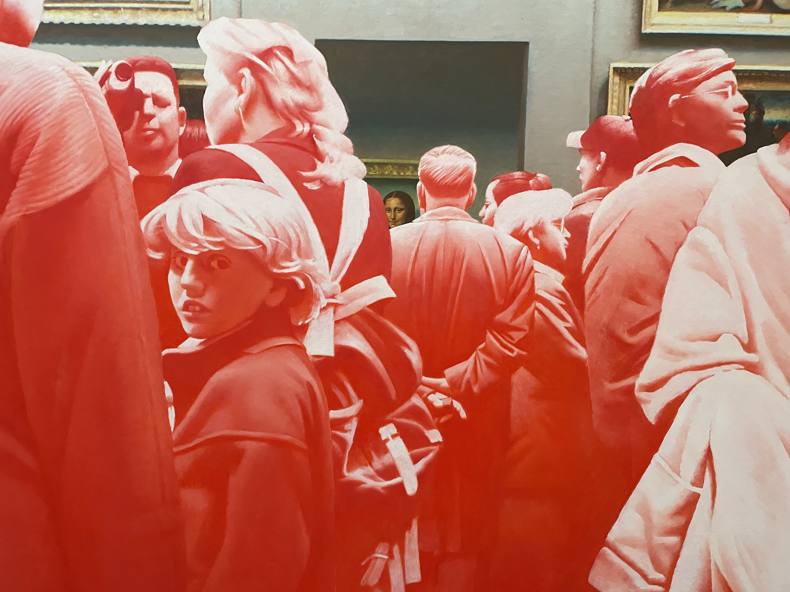
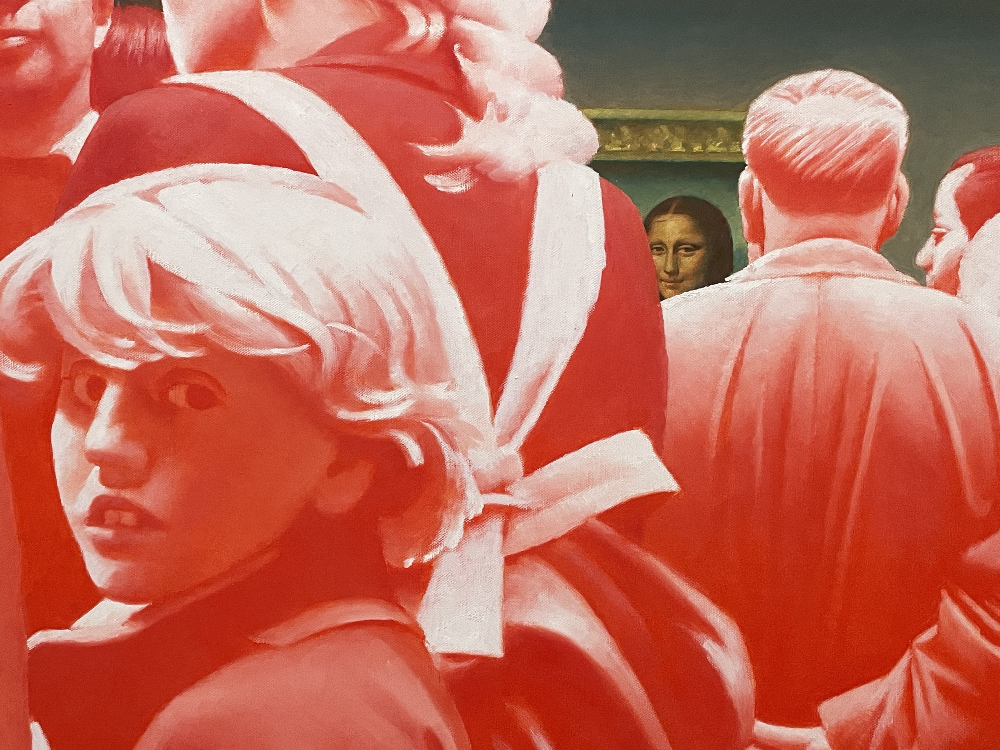
Архитектура восприятия
Куратор выставки Алина Корень выстроила экспозицию удивительно деликатно. Вместо того чтобы перегружать зрителя диджитал-костылями вроде бесконечных QR-кодов, здесь реализовано невероятно «ламповое» решение.
На входе тебе выдают специальную папку, в которую ты по мере прохождения залов собираешь раздаточный материал — «избранные страницы». Эти страницы содержат размышления самого художника: «О поверхности», «О цвете», «О зрителе». Ты буквально собираешь выставку своими руками, сопоставляя текст с визуальным воплощением.
Этот жест блестяще рифмуется с булатовской концепцией взаимодействия с текстом. Художник делил слова на «чужие» — агрессивные, рождённые эпохой, вроде «Слава КПСС» или «Опасно!» — и «свои», возникающие в сознании. К последним относились строки его близкого друга, поэта-концептуалиста Всеволода Некрасова.
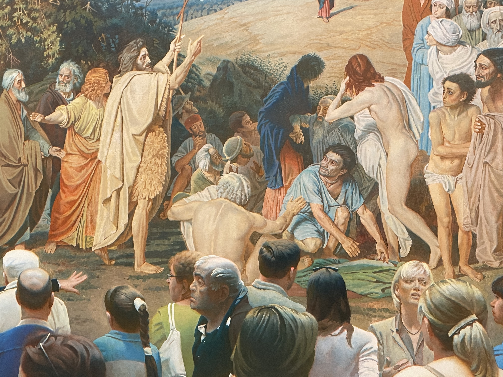
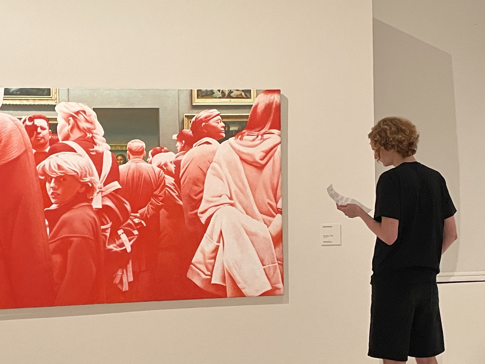
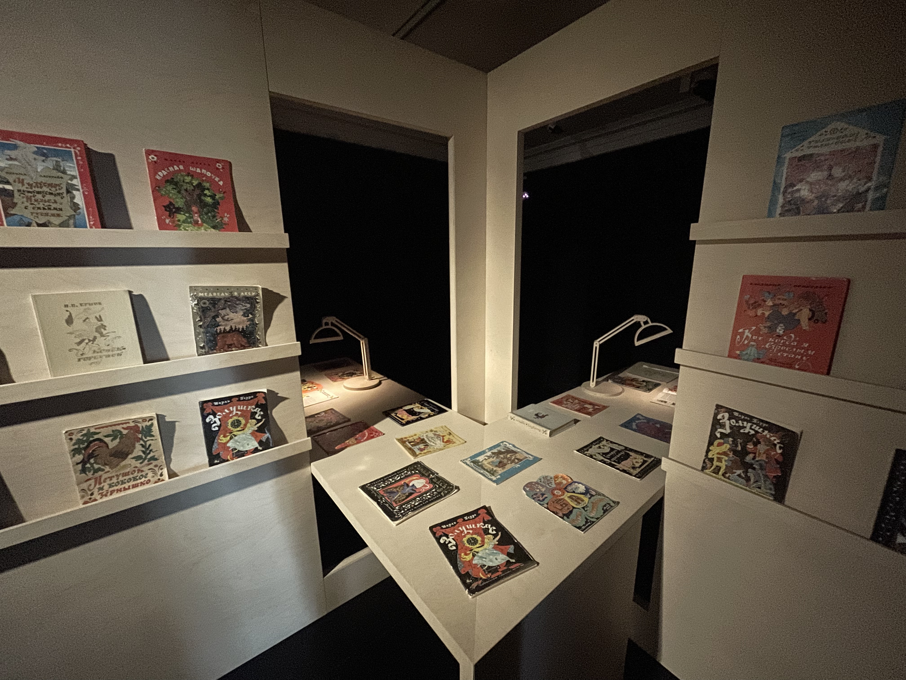
«Свет — это моя вера. За глухой тьмой социального диктата всегда брезжит божественный свет»— Эрик Булатов
Текст как барьер, небо как абсолют
Кульминация моего журналистского и эстетического восторга произошла в белых залах, где размещены концептуальные полотна. Работы Булатова кажутся обманчиво знакомыми, маскируясь под плакатную графику. Но стоит задержаться перед ними чуть дольше, как зрение начинает играть с тобой в сложную игру.
Для Булатова красный цвет советских лозунгов был максимально плоским, агрессивным, не проникающим вглубь картины, а выталкивающим зрителя. В его работах текст становится железной решёткой, архитектурным барьером. Буквы не изображают слова — они фиксируют их тяжёлое, давящее движение в пространстве.
Особенно мощно этот конфликт плоскости и глубины раскрывается при сопоставлении с пейзажем. Художник сталкивает материальную поверхность — идеологию, плакат, ограничение — и воображаемый мир, свободу, небо. Небо у Булатова — это всегда прорыв. Социальное пространство имеет жёсткую границу, а истинная свобода находится за ней.
Совершенно иначе строится контакт в работе «Картина и зрители» (2012). Булатов берёт хрестоматийный сюжет ивановского «Явления Христа народу» и вводит на первый план современную экскурсионную группу. Стирая границу между нами и холстом, он воплощает свою идею: «У меня диалог не со зрителем, а с картиной. Я и есть зритель, пытающийся войти в нарисованное пространство».
Красные буквы — железная решётка. Слово давит, выталкивает, запирает. Идеология как архитектурный барьер.
За плоскостью плаката — бесконечная перспектива. Свет как вера. Прорыв за пределы социального диктата.
Иванов переосмыслен: современная экскурсионная группа перед «Явлением Христа». Граница между нами и холстом стёрта.
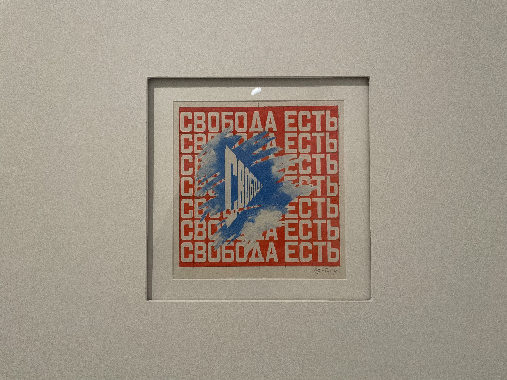
Итог
Стоя перед картинами Эрика Булатова, я испытывал почти физическое ощущение того, как визуальная иллюзия ломает привычное восприятие реальности. Этот художественный язык, сформированный в условиях советской несвободы, сегодня, в 2026 году, звучит пугающе остро.
Мы снова живём в мире, перенасыщенном символикой, агрессивными цветами и чужими словами, которые пытаются заслонить от нас горизонт. Уходя из РОСИЗО с картонной папкой собранных текстов, я уносил с собой главное открытие этой выставки.
Булатов не просто задокументировал абсурдность перенасыщенной пропагандой действительности. Он подарил нам терапевтический метод: как бы плотно агрессивные буквы ни перекрывали перспективу, за ними всегда скрывается безграничное, свободное пространство.
Нужно только не забывать вглядываться в глубь.
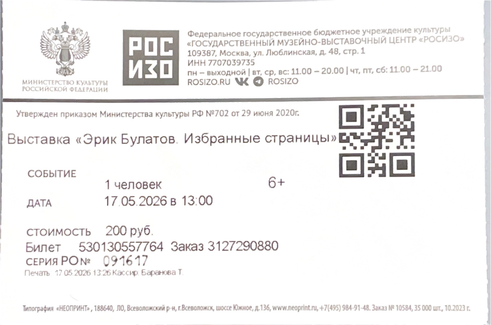
Зачётный проект по культурологии.
Студент: Евстифеев Глеб · Группа 24ИЖ1